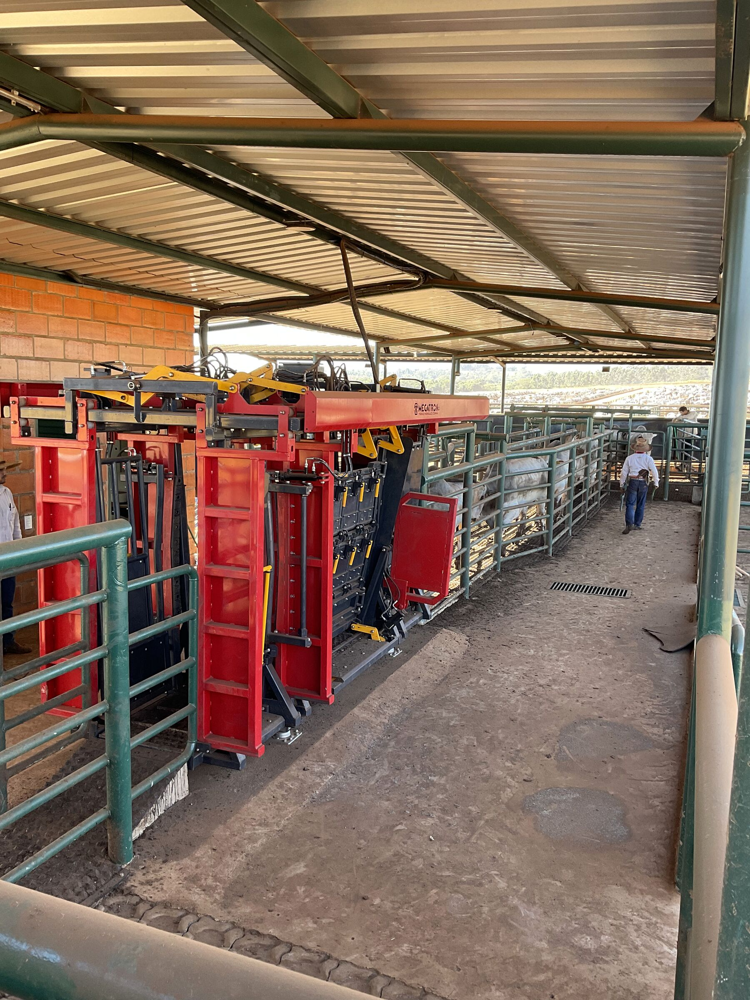

Balança não mente. E a nossa é aberta.
Você acompanha cada arroba do seu lote: pesagem em balança própria, preço CEPEA e relatórios do confinamento ao processamento.
ICMS zero em SP
Isenção total do imposto para quem confina em São Paulo: vantagem que vai direto para a sua margem.
Trava na B3
Proteção de preço nas duas pontas (boi gordo e insumos), definida na entrada do lote.
Giro de 90 a 110 dias
Ciclo curto: seu capital não fica preso um ano no pasto para virar arroba.
Identificação tripla
SISBOV, contrato e botton eletrônico: cada animal é um indivíduo com histórico completo.
Bem-estar certificado
Espaço generoso por cabeça, sombra para europeus e ronda diária, tudo auditado por QIMA/WQS. Animal calmo engorda melhor.
Porteira aberta
Venha quando quiser: olhe o cocho, confira o lote, converse com quem cuida do seu gado.
Seu lote em uma página.
O Relatório do Parceiro reúne pesagem de entrada, dieta fornecida × consumida, ganho médio diário, sanidade e previsão de processamento, com preço CEPEA de referência. Transparência de balança que deixa de ser promessa e vira demonstração.
O parceiro vê o número, não o adjetivo.
Lote 218-B · parceiro anonimizado
| Indicador | Valor |
|---|---|
| Entrada | 12/05 · pesagem em balança própria |
| Fase atual | Terminação · dieta energética |
| Consumo | Fornecido × consumido conciliados no sistema |
| Sanidade | Ronda diária · sem ocorrências |
| Previsão de processamento | Set/26 · referência CEPEA |
"Parceria boa é a que o pecuarista renova sem precisar ser convencido."Crenças CMA · nº 6
Seu gado no confinamento pioneiro em certificação do Brasil.
Isenção total de ICMS em SP, trava de preço na B3 e o relatório do seu lote em uma página. Simule sua parceria.